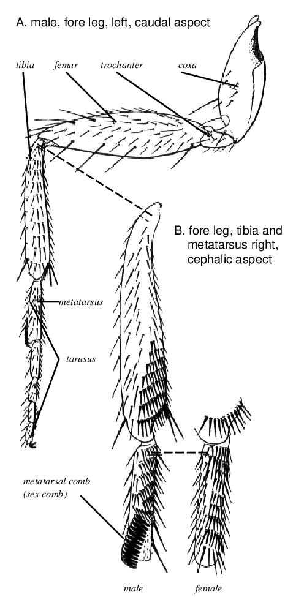
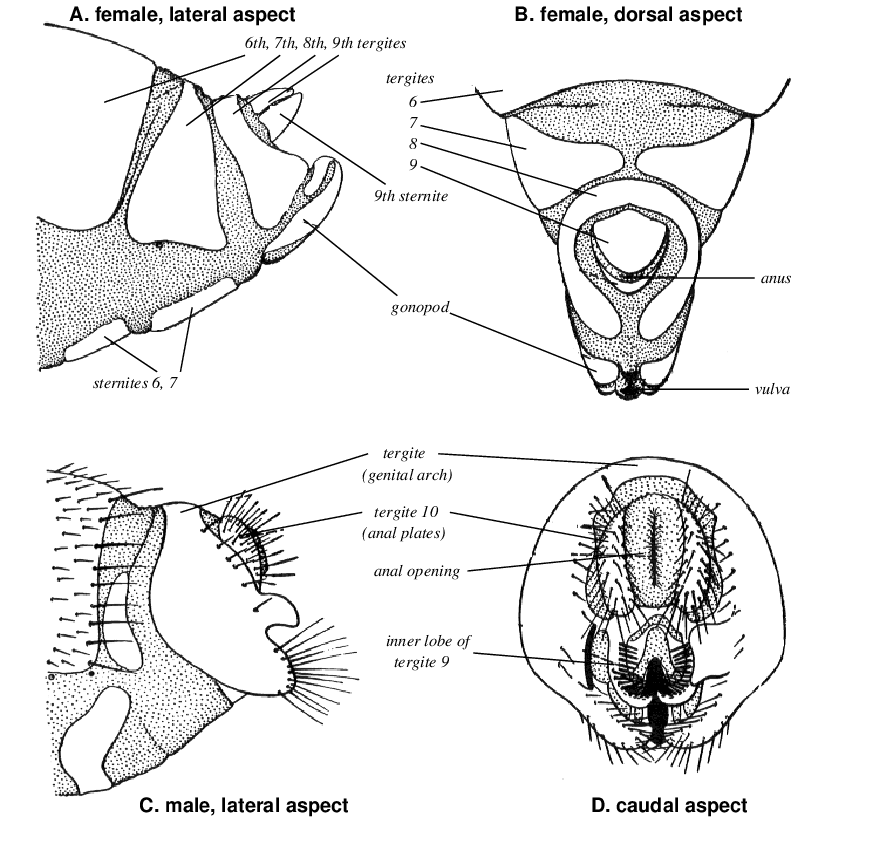

Laboratory Course in Drosophila Genetics
1 Introduction
Fruit fly Drosophila melanogaster is ideally suited to the practical demonstration of the basic phenomena of genetics. A large number of easily recognizable genetic markers, a generation time of only 10 days and simple culture methods make the fruit fly the eukaryote of choice for many geneticists. In this course we will have several experiments which illustrate various fields of genetics, ranging from simple Mendelian crosses to the induction of mutations.
You can learn the concept of genetic inheritance underpinning living things by observing Mendelian inheritance, mutations and natural selection using Drosophila as an experimental material.
You have to analyze data statistically. To do this, you have to obtain a lot of offspring from mating between mutant strains of Drosophila. Therefore, you have to keep flies in healthy condition and to make mating plans according to fly’s growth states.
2 Genetic Terminology
- Allele
- One of a series of possible alternative forms of a given gene unique in DNA sequence and affecting the functioning of a single product. If more than two mutant alleles have been identified in a species, the locus is said to show “multiple allelism”.
- Autosome
-
A chromosome other than a sex chromosome.
- Chromosome mutation (chromosomal aberration)
-
A change affecting more than one gene such as the loss, duplication, or rearrangement of chromosome material containing genetic information.
- Diploid condition
-
The chromosome state, in which each type of chromosome (except the sex chromosomes) is represented twice in somatic cells (2N).
- Dominant/recessive
-
In diploid organisms an allele which is phenotypically expressed in either the homozygous or heterozygous state is said to be dominant. An allele which is expressed only when homozygous is said to be recessive.
- F1
-
First filial generation; the offspring from an experimental crossing. The parents of the F1 are referred to as P.
- Gene
-
A gene is an hereditary unit, in the classical sense, and usually occupies a specific position (locus) on a specific chromosome within the genome; operationally it is a unit that has one or more specific effects on the phenotype of the organism; a gene can mutate to various allelic forms and recombines with other such units; at the molecular level a specific sequence of nucleotides in a DNA molecule.
- Genotype
-
The genetic constitution of a cell or of an organism, as distinguished from its physical appearance (phenotype).
- Hemizygous
-
Having a gene present in a single dose. May refer to a gene in a haploid organism, or to a sex-linked gene in the heterogametic sex, or to a gene in the appropriate chromosomal segment of a deficiency heterozygote.
- Heterozygous
-
Having different alleles at the corresponding loci of homologous chromosomes.
- Homozygous
-
Having identical rather than different alleles at the corresponding loci of homologous chromosomes and, therefore, breeding true.
- Lethal mutation
-
A mutation which results in the premature death of the cell or organism carrying it. Dominant lethals kill heterozygotes, whereas recessive lethals kill only homozygotes.
- Locus
-
The position that a gene occupies on a chromosome.
- Mutation
-
- The process by which a gene undergoes a chemical or structural change; 2. a modified gene resulting from mutation; 3. by extension, an individual manifesting the mutation.
- Phenotype
-
The observable properties of an organism, produced by the genotype in conjunction with the environment.
- Sex chromosomes
-
The chromosomes that are dissimilar in the heterogametic sex. In Drosophila called X and Y.
2.1 The use of symbols for genes and alleles
With the methods of classical genetics, the genetic determination of a trait can only be proven after a mutation in the gene controlling this characteristic has been found. The mutant allele is identified based on its expression as a different or “mutant” phenotype. Dominant alleles are immediately detectable, recessive ones only after they have become homozygous.
Since the early days of Mendelian genetics it has been the custom to name the gene after the phenotypic change observed in the mutant. For example in Drosophila, a fly was found with wings of reduced size. This phenotype was called “vestigial”, and vg is used as the symbol. Symbols with the first letter in upper case denote a dominant mutation, those with a lower case first letter a recessive mutation. The original allele present before the mutation occurred is said to be “normal” or “wild type”. The wild type allele is the most common allele found in natural populations. For practical reasons the name used for the mutant phenotype is also used to designate the mutant allele and the gene as such. The wild type allele is the same symbol with a plus superscript (vg+) often abbreviated simply +. The name, in this case “vestigial”, is also used for the gene of which we now have two alleles vg+ and vg. The “vestigial” gene controls the size of the wings. Note that the symbolism system used in Drosophila is different from that used for many other organisms in that the upper and lower case of the same letter, e.g. B and b indicate different genes and not alleles. B is a dominant mutation (Bar eye) and its wild type allele is B+, while b is a recessive mutation (black body color) with normal body color b+.
To perform an experimental cross with Drosophila, female and male flies are placed together in a vial or bottle. Gene symbols are used to label bottles with the crosses made. As a rule the genotype of the female parent is written first, followed by an x and then the genotype of the male. In cases where we are interested in several genes on a chromosome, the symbols of the genes on one homolog are written together and separated from those on the other homolog by two horizontal lines, e.g.: \(\frac{vg^{+}\ bw^{ +}}{vg \ \ bw}\)
A general rule that is used in genetics is that only the alleles of interest are written although every fly is of course carrying two alleles of each of thousands of genes. Any gene not written is assumed to be homozygous for the wild type allele.
3 The Biology of Drosophila melanogaster
Drosophila melanogaster is an outstanding experimental organism for classroom experiments. A general overview of its biology will help you to become more familiar with this organism.
3.1 The life cycle
Drosophila melanogaster as a fly belongs to the holometabolic insects which undergo a complete metamorphosis. The sequence and the approximate duration of the different stages of the life cycle at its optimum growth temperature, 25 ℃, are:
| Stage | Duration |
|---|---|
| Embryonic development | 1 day |
| First larval instar | 1 day |
| Second larval instar | 1 day |
| Third larval instar | 2 days |
| Prepupa | 4 hours |
| Pupa | 4.5 days |
| Adult | 40–50 days |
Males become sexually mature and fertile shortly after emergence from the pupal case. Females mature less quickly: 6 to 12 hours depending on the strain. Once a female is sexually mature she will mate repeatedly with different males. Sperm is stored by the female in the ventral receptacle and used to fertilize eggs laid at later times. For this reason it is necessary to use virgin females in any cross in which the males to be used are different from the ones in the culture bottle from which the females are taken.
Although the mean life span for adults at 25 ranges from 40 to 50 days and individuals may live as long as 80 days, young flies, not more than 10 days old, are normally used in crosses since fertility decreases with age. Under standard conditions the whole development from egg to adult takes about 10 days. At lower temperature, the life cycle is lengthened: 14 days at 23.5 ; 21 days at 18 . Development can be speeded up by increasing temperature, but at around 29 - 30 ℃ pupal lethality increases drastically, and in most strains, females become sterile at temperature above 30 ℃.
3.2 Number of progeny
From a single pair of flies, kept for several days in a culture vial, a progeny of several hundred may be obtained. With Drosophila it is possible to obtain a large progeny from a few parental flies within approximately 2 weeks. This is a prerequisite for experiments which need statistical analyses.
3.3 Size
Adult flies as well as all the developmental stages are fairly small. An adult fly is about 5 mm long and has a weight of approximately 1 milligram. Thus, large populations of hundreds of individuals can be grown in relatively small culture bottles. If cultures become overcrowded, the size of individual flies may be markedly reduced.
4 Fly Culture
4.1 Culture vessels
For rearing mass cultures, milk bottles with a volume of about 200 ml are useful. About 40 ml of medium is used in a milk bottle. For the progeny from a small number of parental flies glass vials with a volume of 50 ml (medium size) may be used. In medium vials, containing about 10 ml medium, progenies of up to 200 individuals may be produced. For the progeny of single pair matings glass vials with a volume 30 ml (small size) may be used. In small vials, containing about 7 ml medium, progenies of up to 100 individuals may be produced.
| vial | volume of medium | number of progeny |
|---|---|---|
| Milk | 25 ml | 500 |
| Medium | 10 ml | 200 |
| Small | 7 ml | 100 |
4.2 Culture medium
- In an ordinary cooking pot, mix together:
- 1 L water
- 10 g agar
- 40 g dry yeast
- 50 g sucrose
- 50 g corn meal
- 50 g malt
- Heat to boiling.
- Keep boiling gently for approx. 15 min while stirring.
- Stop heating and stir in:
- 10 ml 10% propyl-p-hydroxy-benzoate in ethanol (Nipagin)
- 5 ml propionic acid
- Pour while still hot into culture bottles to make a layer about 2 cm thick.
- Plug the bottles with cotton bungs.
- Leave the vials for over night.
- Freshly prepared vials may be used for starting cultures within the next few days.
4.3 Handling of adult flies
In order to examine the flies of various phenotypes used to start new crosses, the live flies are anesthetized with ether gas. The basic principle for the use of ether is to introduce the flies for a short while into a container in which the flies are exposed to ether vapor.
- Drop about 2 ml of ether into a washing bottle stuffed with cotton.
- Transfer flies into an empty glass vial and plug it with a cotton bung.
- Fill the vial with ether vapor from the washing bottle.
- After all flies are inactivated, they are left for a further 10–20 seconds.
- If the flies are needed later for setting up fresh cultures, the anesthetic period and the thickness of ether vapor have to be controlled carefully, because longer and thick ether exposure will kill them.
- When transferring flies into a medium containing vial, lay down the vial until the flies have revived in order to prevent them from sticking to the medium surface. Anesthetized flies can also be put into a empty vial to revive and the shaken carefully into the food bottle.
4.4 Starting new cultures
When starting new cultures, it is important to be sure that neither the walls of the bottle nor the surface of the medium are wet.
4.4.1 Labeling
Vials and bottles should be labeled with a piece of paper. Use water-soluble glue because the labels can be soaked off easily.
4.4.2 Transfer of flies
The easiest way to start new cultures is to shake unanesthetized flies directly from one bottle into a fresh one. First the flies are shaken to the bottom of the bottle, then both bottles are opened, the bottle with the flies is put upside down on the empty one, and then the flies are shaken into the new bottle. Too many parental flies yield overcrowded cultures with small, slow growing larvae and delayed hatching of F1 flies.
4.4.3 Stock keeping
To propagate normally fertile stocks about 10 to 25 pairs are used per milk bottle. Beginners should count the flies; later on with some experience, the number of flies can be estimated. Remember: Avoid overcrowding. The parental flies should be removed from the bottles after 2 to 3 days. The bottles are kept in an incubator with an evaporating dish at 23 ℃.
4.5 Sex differences
For genetic crosses it is mandatory that males and females can be separated from each other without error. Although there are a number of morphological differences between adult females and males, only a few of these can be safely used for the sexing of flies by beginners.
4.5.1 Sex combs
Put the flies on their backs under the dissecting microscope and inspect the forelegs. Males have a thick tuft of hairs on the proximal segment of the tarsus, the so-called sex comb (see Figure 1).

The sex comb is a row of about 10 short, thick, black bristles, located near the distal end of the front side of the leg. Females lack such a structure.
4.5.2 Genitalia and abdominal coloration
The external genitalia in the two sexes are very different (Figure 2). The differences can only be seen at magnification of 25-fold and higher. The general impression of the male genitalia at lower magnification is a prominent dark structure. Females have 7 abdominal segments. The dark back edge of every segment is visible in a dorsal or lateral view. Males have only 5 segments. The posterior part of the abdomen appears black, because the last segments are strongly pigmented and form a black region. These characteristics have to be used with caution for the identification of the sexes, because newly hatched individuals have not yet developed the characteristic pigmentation and anesthetized males often extend their abdomens and in this way the coloration of the abdomen appears striped, similar to that of the females.

4.6 Collection of virgins
For many experiments, virgin females which have not yet mated are required. In order to collect virgins, select cultures, preferably 9–10 days old, with dark brown pupae ready to hatch and remove all adult flies! Not a single male or female should remain in the culture. Depending on the stock, flies can be collected during the next 8 to 12 hours. At the end of this period, the flies are anesthetized. Under the stereomicroscope, females and males are separated carefully using a fine brush. Now the females are inspected again to make sure that not a single male has been overlooked. The virgins are then kept in culture bottles without males. This allow the females to mature sexually for 2–3 days. When starting crosses, check a last time for the absence of males from the group of virgins used. If a male is found, the entire group of females has to be discarded. The consequences of such errors can be minimized, if only small groups of females are matured together in one container. Since the collection of virgins is the most critical part of a successful Drosophila experiment, the individual steps are listed again below:
- Before starting the collection of virgins, not a single fly must be left behind in the culture.
- The two sexes have to be separated very carefully. The sex combs of the male and the external genitalia are the best characteristics to use for newly hatched flies.
- Before moving the females to culture bottles, make sure that not a single male is present.
- When starting crosses, check for the absence of males from the group of virgins.
5 Overview of the experiments
5.1 Experiments
- Variation in Population with Natural Selection (Selection)
- Canton-S x vg
- Dihybrid Cross with Independent Assortment (vge)
- vg x e
- Recombination (cnbw)
- Canton-S x cn bw
- Mating Preferences (mating)
- Canton-S vs vg
- P-M Hybrid Dysgenesis (HD)
- Harwich and Canton-S
6 Variation in Population with Natural Selection
According to the Hardy-Weinberg law, gene frequencies do not change from generation to generation. However, in practice, gene frequencies change due to various factors. In this experiment, a recessive mutant line is crossed with a wild-type line to observe changes in the frequency of the recessive mutant gene.
6.1 Material
- Canton-S: A wild type strain. It has no visible mutant phenotype.
- vg (vestigial): vestigial wings.
6.2 Procedure
- Parental cross:
♀ vg / vg × + / + ♂
- The F1 flies are intercrossed. Approximately 5 females and 5 males are put into a midle vial. After 3 days remove flies.
- Collect F2 flies in a milk bottle for 3 days. Transfer flies into a new milk bottle. Discard the old bottle. After 1 day count the numbers of normal and mutant individuals.
- Count the number of F3 normal and mutant individuals.
6.3 Results
| Generation | Normal flies | v flies | Total flies | Frequency of vg / vg |
|---|---|---|---|---|
| F2 | ||||
| F3 |
6.4 Questions
- Calculate the selection coefficient (s).
7 Dihybrid Cross with Independent Assortment
Inheritance is the transmission of genetic information from parents to offspring. Most of the genetic information is located on the chromosomes. The principles of chromosomal inheritance were first discovered experimentally by Gregor Mendel in 1865 and rediscovered by Correns, von Tschermark and de Vries in 1900. Mendel’s laws describe the basic rules of simple inheritance:
7.1 Law of dominance
When purebred (homozygous) strains differing in a particular trait and the corresponding allele pair are (a+a+ and aa, respectively) crossed, the F1 individuals (a+a) are uniform, regardless of the direction of the cross. The F1 from reciprocal crosses, either a+a+ females × aa males or aa females × a+a+ males, usually express only one of the two characteristics (that controlled by the dominant allele a+) to the exclusion of the other (the recessive one). This is the law of dominance also known as the principle of the uniformity of the F1.
7.2 Law of segregation
Recessive characteristics, which are masked in the heterozygous (a+a) F1 arising from a cross between purebred strains, reappear in a specific proportion of the F2. That is, the numbers of an allele pair (a+a) separate from each other without influencing each other, when an individual forms haploid germ cells. This is the principle of segregation.
7.3 Law of independent assortment
Members of different allele pairs (e.g. a+a and b+b) assort independently of each other when haploid germ cells are formed provided the genes in question are unlinked (located on different chromosomes). This is the principle of independent assortment.
7.4 Problem
Test experimentally whether or not two characteristics result from two unlinked Mendelian genes. Do this by crossing flies of the two stocks to obtain an F1 progeny. Then intercross the F1 flies to obtain an F2 progeny. This will allow the detection of independent assortment if present.
7.5 Material
- vg (vestigial): vestigial wings
- e (ebony): black body color
7.6 Experimental work and interpretation of data
Start work by filling in the available information in the spaces provided below. Remember that the haploid chromosome set of Drosophila is made up of 4 chromosomes. We assume that all genes other than those specifically mentioned are wild type. Chromosomes carrying no gene of particular interest within the context of the present experiment are also designated “+”. As a symbol for the Y chromosome, which in normal individuals is present only in males, we use the symbol “Y”. For the X chromosome we write “X”. Now write down the genetic formulas of the parental flies (P = parental generation). Starting from these formulas, determine the types of gametes formed by the parents.
| Chromosome | 1 | 2 | 3 | 4 | Phenotype |
|---|---|---|---|---|---|
| ♀ | X/X; | vg / vg; | e+ / e+; | + / + | vestigial |
| ♂ | X/Y; | vg+ / vg+; | e / e; | + / + | ebony |
The parental individuals (P) will produce the following kinds of gametes:
| P | gamete genotype |
|---|---|
| ♀ | |
| ♂ |
7.7 Predict the genotypes of the F1 individuals
This is usually done by means of genetic checkerboards (Punnett squares). This is a convenient way of working out all the possible combinations of different types of eggs from the female parent and sperm from the male parent. The steps followed are:
- Work out the genotypes of the eggs produced by the female and write the genotype in one space vertically along the female column.
- Work out the genotypes of the sperm produced by the male and write each different genotype in one space vertically along the male column.
- Fill in each square with the genotype of the type of F1 zygote formed by the combination of the egg and the sperm. Note that by convention, in a heterozygote the dominant allele is written first (vg+/vg) no matter which parent donated which allele. Another thing to remember is that each different type of gamete is written only once. The genotype of an individual fly or type of fly is written as if it consisted of only one cell, the zygote (or fertilized egg) from which the individual developed.
Determine the genotype in the different boxes of the checkerboard and give the phenotype and sex of the different classes of progeny. We expect the following F1 (first filial generation) progeny:
| Gamete Genotype | F 1 | |||
|---|---|---|---|---|
| ♀ | ♂ | Genotype | Phenotype | Sex |
By interbreeding the F1 (brother × sister cross) we obtain the F2 (second filial generation). In our future work we will concentrate on the genes which are of particular interest for a given cross. In the present case, these are the genes determining wing size and body color of the flies. The simplified notation of the genetic formulas for the cross leading to the F2 is:
——– × ——–
7.8 Working out the different kinds of gametes each parent will form
To predict the results of any genetic cross, the first step is to work out the genotypes of all the different kinds of gametes which each parent can form. It is important to remember that each gamete must include one allele of each different gene. Each different combination should be included only once, and all combinations must be present. The different kinds of gametes are entered into the next checkerboard, which is used to determine the expected genotypes of the F2 progeny.
| Genotype of sperms |
Genotype of eggs | |||
|---|---|---|---|---|
7.8.1 Procedure
- Day 1: 3 or 4-day-old virgins of the vg stock are mated to e males. Prepare two vials with five pairs of flies in each one.
- Day4: The parental flies are removed from the vials.
- Day 12: Check the F1 progeny. Are all the flies phenotypically uniform? The flies do not have to be counted. For the next cross we select at random five pairs of flies and put them into a new vial.
- Questions:
- Why is it mandatory to remove the P flies from the vials on day 4 or at least before the F1 hatch?
- Is it appropriate to start an F2 cross with nonvirgin F1 females?
- Day 15: The parental individuals are removed from the vials.
- Day 23: The F2 progeny are classified according to phenotype and counted.
- Questions:
- How many different genotypes are expected?
- What ratio do you expect for the different phenotypes? Record your answers in the following table.
| Phenotype | Wild type | vg + | + e | vg e |
|---|---|---|---|---|
| Expected ratio | ||||
| Total Fly Count | ||||
| Observed ratio |
In the experimental work, the flies of the F2 generation are classified according to their phenotype and counted. For each fly the size of the wings and the body color are recorded. The sex of the flies is not registered. The numbers found are entered in the table.
- Questions:
- Do you find all the different F2 phenotypes which are theoretically expected?
- Does the observed ratio of phenotypes coincide with the theoretical expectation?
To answer the last question, we must analyze our data statistically. The agreement between the expected and the observed frequency of individuals in the different phenotypic classes can be measured by a \(\chi^{2}\) test. The \(\chi^{2}\) is defined as:
\[\begin{equation} \chi^2 = \sum \frac{(o - e)^{2}}{e} \end{equation}\]
The symbols denote:
- o: the observed number of individuals in a particular class,
- e: the expected number of individuals in this class. The expectation is based on the prediction found by applying Mendel’s laws. The expected number is calculated by multiplying the expected fraction by the total number of flies counted.
In our case with four different classes the \(\chi^{2}\) values for different probabilities, P, describing the agreement between experiment and expectation are given in the following probability table:
| P | \(\chi^{2}\) |
|---|---|
| 0.99 | 0.115 |
| 0.975 | 0.216 |
| 0.90 | 0.584 |
| 0.80 | 1.005 |
| 0.70 | 1.424 |
| 0.5 | 2.366 |
| 0.3 | 3.665 |
| 0.2 | 4.642 |
| 0.1 | 6.251 |
| 0.05 | 7.815 |
| 0.01 | 11.34 |
To have large enough numbers for the statistical analysis the data from all students are pooled. Using the table shown below, we calculate the \(\chi^{2}\) value. The \(\chi^{2}\) value is located in the probability table above and the corresponding P value read. The P value is the cumulative probability of a deviation from the expected as large or larger than that observed. Conventionally, in biology one assumes that P values below 0.05 (= 5%) indicate a significant deviation of the observation from the expectation. The difference is larger than what would be expected to occur in experimental work, simply by chance. In such a case one assumes that the observation is different from the expectation.
| Operation | Wild type | vg | e | vg e | Tatal |
|---|---|---|---|---|---|
| Observed number (o) | |||||
| Expected number (\(e\)) | |||||
| \(o-e\) | |||||
| \((o-e)^2\) | |||||
| \((o-e)^2/e\) | \(\chi^2=\) |
Interpret the observed \(\chi^{2}\). In case the observation deviates significantly from the expectation, try to find reasons for the deviation.
7.8.2 \(\chi^{2}\) test on R
You can execute \(\chi^{2}\) test with R, statistical software package.
8 Recombination
Two genes which are located on the same chromosome are referred to as linked, because they are often transferred together to the progeny.
8.1 Materials
- Canton-S: wild type strain
- cn bw: double homozygous mutant strain; cn (cinnabar) mutation, which shows shiny light red eye color, and bw (brown) mutation, which shows brownish red eye color, both mutations are located on the second chromosome.
8.2 Experimental work
Parental cross
♀ + + / + + (Canton-S) × cn bw / cn bw ♂
F1 progeny are crossed with the mutant strain (back cross) in two ways.
F1 females × cn bw / cn bw
cn bw / cn bw × F1 males
F2 flies are classified according to phenotype and counted.
(A) F1 × cn bw Recombination Genotype Fly count No No Yes Yes (B) cn bw × F1 Recombination Genotype Fly count No No Yes Yes
8.3 Interpretation:
- What conclusions can be drawn about difference of the number of recombinants between the two crosses?
9 Mating Behavior
The successful mating of flies, which is presupposed in all our crosses, actually requires a complicated, genetically determined courtship ritual. We shall observe the normal mating behavior of flies before analyzing changes in this behavior.
9.1 Problem
To determine the sequence and the individual elements of the different activities in the mating behavior.
9.2 Procedure
Put one pair of virgin wild type flies into a cell culture vessel. Do not anesthetize flies. Observe the behavior of the female and the male under a stereomicroscope at low magnification. Record the observations and the time when the behavior is happen
10 Mating Preferences
The Hardy-Weinberg law is only applicable under the assumption of panmixia in a population. However, it can be shown that for specific alleles in a population the frequency of the carriers of this allele is different from the expectation based on the frequency of the allele in the population. In other words, mating preferences exist within a population. This phenomenon can be demonstrated with the help of two different monohybrid crosses.
10.1 Problem
Is there a difference between the mating success of wild type males and of vg males?
10.2 Material
virgin 4-day-old females and males of wild type Canton-S strain as well as of the vg strain.
10.3 Procedure
- Put 10 females and 10 males of each strain into a cell culture vessel.
- Record successful mating until 10 pairs of copulation.
- Try this mating experiment ten times.
| Trial | CS x CS | CS x vg | vg x CS | vg x vg | Total |
|---|---|---|---|---|---|
| 1 | 10 | ||||
| 2 | 10 | ||||
| 3 | 10 | ||||
| 4 | 10 | ||||
| 5 | 10 | ||||
| 6 | 10 | ||||
| 7 | 10 | ||||
| 8 | 10 | ||||
| 9 | 10 | ||||
| 10 | 10 | ||||
| Total | 100 |
10.4 Conclusions
- What can you conclude from your results about the effectiveness of mating of the two types of strains?
- List as many hypotheses as you can think of to explain your results.
11 P-M Hybrid Dysgenesis
In Drosophila, mating combinations between some specific strains result in offspring with various aberrations. This phenomenon is called hybrid dysgenesis. The most familiar example is the P-M hybrid dysgenesis. When crossing females of laboratory strains maintained for many years and males of newly established strains from the natural population, their offspring show sterility, increasing mutation rate, recombination in males, and chromosome rearrangements. In this hybrid dysgenesis the strains of male parents are called the P strains (paternal) and the strains of female parents the M strains (maternal). No abnormality takes place in the reverse crossings or the internal crossings. The symptoms of the P-M hybrid dysgenesis get worse at higher temperature of rearing.
11.1 Strains
- Canton-S
- Harwich
11.2 Procedure
- Make the four crosses listed below.
| Cross | Female | Male | Culture Temp. |
|---|---|---|---|
| A | Harwich | Canton-S | 20 ℃ |
| B | Harwich | Canton-S | 25 ℃ |
| C | Canton-S | Harwich | 20 ℃ |
| D | Canton-S | Harwich | 25 ℃ |
- Anesthetize and kill the F1 progeny.
- Dissect the abdomens of 20 females from each cross. Place each female for dissection in a drop of 70% EtOH in a small dish over a dark background. Tear open the abdominal wall with a forceps.
- Examine the ovaries. Fertile females will have ovaries packed full of developing eggs while those having dysgenic ovaries will have one or both ovaries which are empty of eggs.
- Record your results for each cross in the following table.
| Cross | Both ovaries normal | One ovary normal | No normal ovaries | Dysgenic ovaries(%) |
|---|---|---|---|---|
| A | ||||
| B | ||||
| C | ||||
| D |
- In which cross do you observe dysgenic ovaries?
- What is the causes of the P-M hybrid dysgenesis?